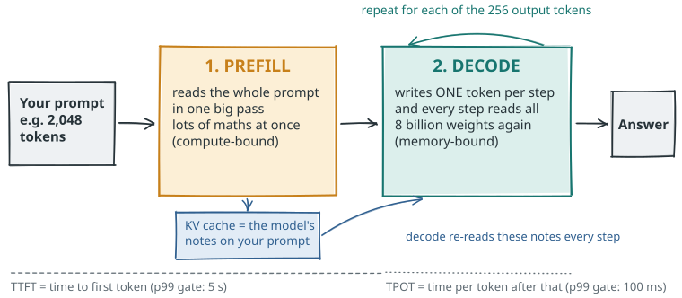
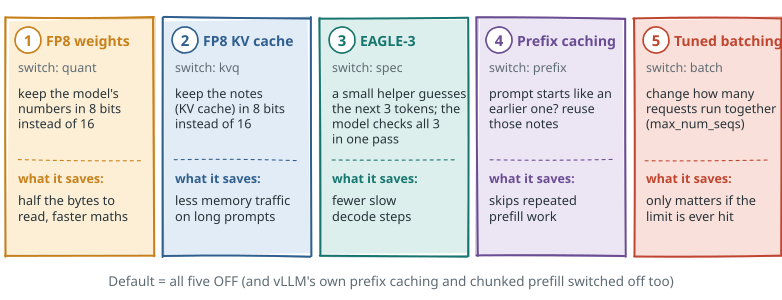
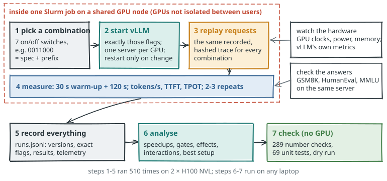
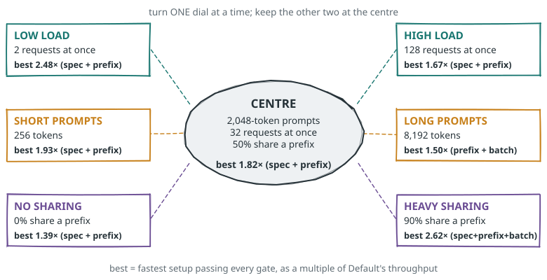
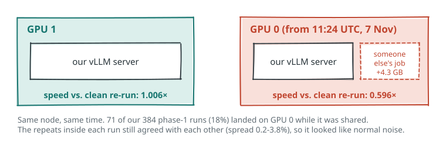
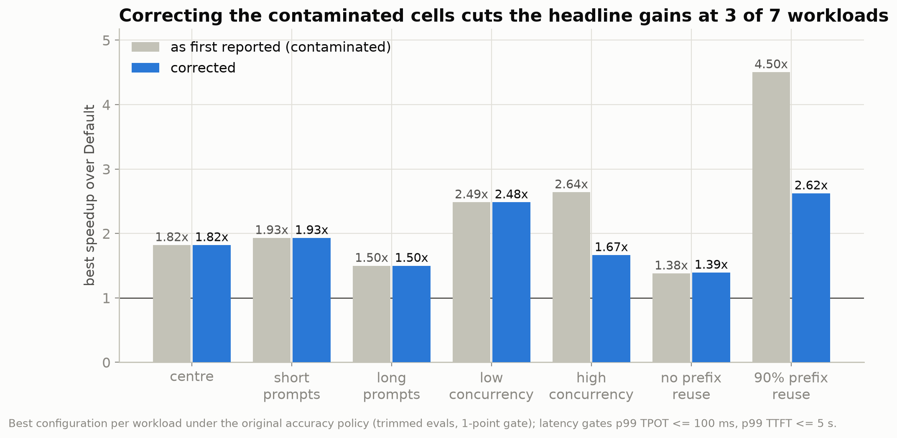
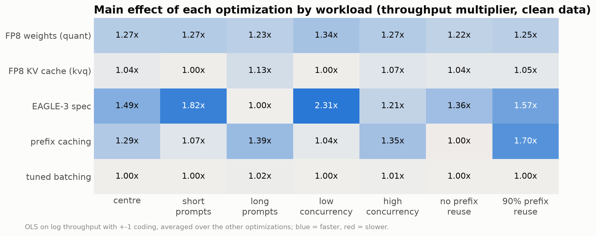
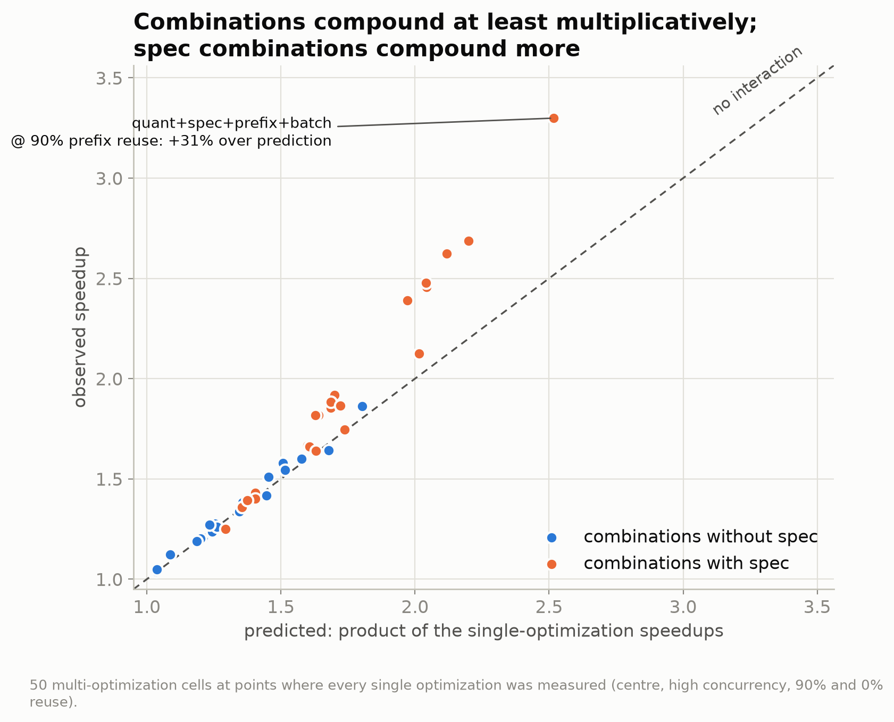
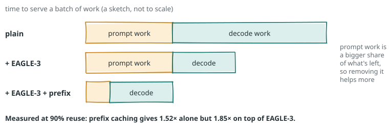
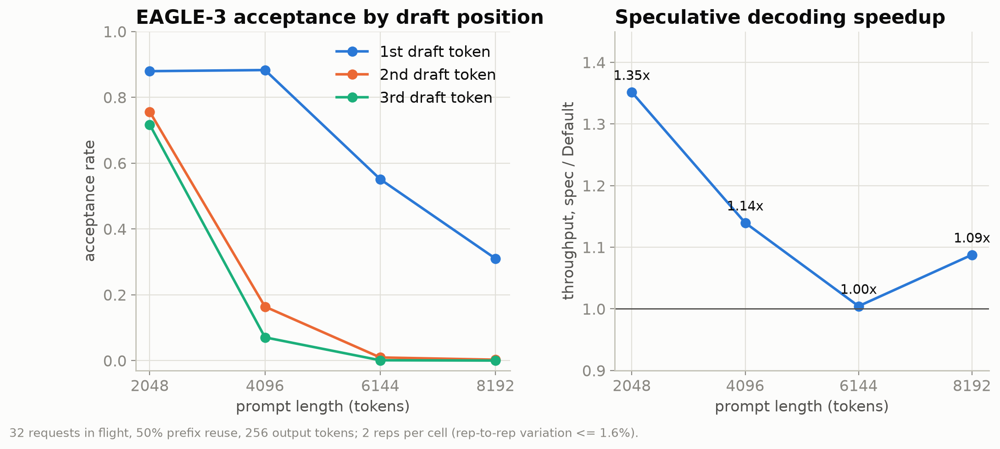

No hosted demo (this is a measurement study). GPU-free: pytest tests/, the dry pipeline on a simulated engine, and python evaluation/check_report_numbers.py (§4).
Date · companion
21 November 2026 · same facts as the formal report docs/Project_Report.pdf, written for a first-time reader
The short version
An LLM server has one job: answer many people at once, quickly. Engineers have a toolbox of tricks for it,
such as smaller numbers (FP8), a helper that guesses ahead (speculative decoding) and reusing work across similar
prompts (prefix caching). But each trick was published on its own, against a different baseline, so nobody could
say which to combine, or when. We built a measuring rig on vLLM 0.31.0 that switches five tricks on and off
independently, and measured them alone and together on Llama-3.1-8B-Instruct at seven kinds of workload on two H100
GPUs: 510 measured runs. The best setups serve 1.39× to 2.62× as many tokens per second as the plain server, inside
every latency and accuracy limit. In every combination we could test, the tricks never cancelled out: their gains
multiply, and with speculative decoding they compound. Speculation fades beyond ~4k-token prompts, and the two FP8
tricks together cost 2.6 points on a maths benchmark. We also caught another user's job silently slowing 18% of our
runs. Five of the seven planned tricks were measured; 289 automated checks re-derive every number.
Three questions to keep in mind
1
Which tricks actually make it faster?
FP8 weights everywhere (1.22–1.34×). Speculation when the GPU has spare room (up to 2.31×). Prefix
caching when prompts repeat (up to 1.70×). Tuned batching: never, in our tests.
2
Stack them: do gains add, multiply or cancel?
They multiply. With speculation in the mix they do even better than multiplying, by up to +31%.
None of the 50 combinations we could test cancelled.
3
Where do they stop, and do they hurt?
Speculation fades beyond ~4k-token prompts. FP8 weights and FP8 KV cache are each harmless alone,
but together lose 2.6 points on GSM8K.
1Problem, scope & success criteria
What were we trying to find out?
Serving a language model happens in two phases (Figure 1). First the server reads your whole prompt at
once: lots of arithmetic, so it is limited by how fast the GPU computes. Then it writes the answer one token
at a time: each step adds one token to every request in the batch, and every step must stream all 8 billion model
weights out of memory again. That second
phase is limited by memory speed, not maths. Each optimization attacks a different one of these costs, which is
why a trick that shines in one situation can do nothing in another.

Figure 1. How one request is served. Prefill is compute-bound; decode is memory-bound and repeats for
every output token. The two latency limits we enforce are marked at the bottom.
Words we use
Token:
a word piece; the model reads and writes tokens.
Throughput:
output tokens per second for the whole server (tok/s). Higher is better.
TTFT:
time to first token: how long a user waits before the answer starts.
TPOT:
time per output token after that: how smoothly the answer streams.
p99:
the value 99% of requests beat; it describes the unlucky user, not the average one.
Default:
the plain server, every trick off. Every speedup is measured against it.
Speedup:
throughput ÷ Default's throughput on the same workload.
KV cache:
the model's working notes on a prompt, kept in GPU memory.
The problem statement (docs/problem_statement.md) asks us to make a served open-weight model faster by
combining such optimizations, and to find which ones contribute, under which conditions, and where they
stop helping. These are the five we measured:

Figure 2. The five switches. A configuration is written as on/off bits in this order, e.g.
00110 = EAGLE-3 + prefix caching. The harness adds two bits for the two unmeasured tricks, so it
writes the same setup as 0011000.
Question
Our answer
Who is this for?
Engineers choosing vLLM settings for a deployment; researchers comparing optimizations on one baseline; whoever re-runs or extends this study.
What did we measure?
The five switches above, at seven workloads that vary prompt length (256 / 2,048 / 8,192 tokens), load (2 / 32 / 128 requests in flight) and prompt sharing (0 / 50 / 90%).
Built but not measured
Chunked prefill and the parallelism strategy, optimizations 6 and 7 of the plan. They exist in the harness and its tests, but measuring them would have taken about 8× the GPU time (§7).
Out of scope
Changing the model itself (e.g. GQA [14]), KV eviction or blending (e.g. CacheBlend [11]), other serving engines, multiple nodes, real user traffic.
Constraints
One shared Slurm node with GPUs not isolated between users; about 100 GPU-node-hours; no gated models (no tokens or secrets); one model, one engine version, one GPU type.
How we score a setup
Value = its speedup over Default, counted only if the unlucky user is still served well (p99 TTFT ≤ 5 s, p99 TPOT ≤ 100 ms) and the model is not measurably worse (accuracy drop ≤ 1 point per task); otherwise Value = 1.0.
Milestones
M1–M8, defined by the team from Assignment 2 and the progress report (no IDs were issued by the course); status in §6.
Done when
Every in-scope setup has a Value at every workload from ≥ 2 clean repeats; effects, interactions, the best setup and what limits it are reported per workload; every no-benefit case is explained; and the number checks pass.
2Related work, baselines & alternatives
What did others do, and why not just combine their numbers?
Every trick here comes from a strong paper: PagedAttention and vLLM [1] built on Orca's iteration-level scheduling
[4]; SGLang's RadixAttention [2] reuses cached prompts; Sarathi-Serve [3] chunks prefills; DistServe [12] splits
prefill and decode across GPUs; speculative decoding [5, 6] and EAGLE / EAGLE-3 [7, 8] guess tokens ahead; FP8 [9],
KIVI [10] and AWQ [25] shrink numbers. Pope et al. [13] and the roofline model [23] explain why decode is
memory-bound. The catch: each paper measures against its own baseline, so the published speedups cannot simply
be multiplied together. That gap is this project.
Approach we considered
What it can answer
Cost
Verdict
Combine published speedups
nothing reliable: the baselines differ
none
rejected
Test one trick at a time
single effects only; blind to how tricks interact
8 setups per workload
rejected
Every combination at every workload
everything
896 setups (7 tricks)
over budget
All combinations at the centre, half of them elsewhere, then dig into anything odd
every single effect and every pairwise interaction; exact attribution at the centre; mechanisms for surprises
128 setups + 60 follow-ups (5 tricks)
chosen (ADR-006, 012, 016)
Pen-and-paper roofline model
upper bounds; misses scheduler and speculation effects
none
used to interpret
The baseline. Default is vLLM 0.31.0 serving Llama-3.1-8B-Instruct in BF16 with every trick off, including
the two vLLM turns on by itself (prefix caching and chunked prefill), the engine's own batch limit and one GPU per
server. In all 45 Default runs the engine itself confirmed these settings (ADR-003).
What we built ourselves: the measuring harness (harness/) and its 69 unit tests, the Slurm
support, the seven-workload study and its follow-up investigation, the contamination detection and clean-up, and
the GPU-free number checks (evaluation/).
3Architecture & implementation
How does the measuring machine work?
Think of the harness as a very patient lab assistant. For each combination of switches it starts a fresh vLLM
server with exactly those flags, replays the same recorded set of requests, measures for two minutes,
writes everything down, and moves on. Figure 3 follows one measurement end to end.

Figure 3. Components and data flow. Steps 1–5 run inside one Slurm job on the shared GPU node (the
dashed boundary is also the main trust boundary, §5.2); steps 6–7 run offline on any machine.
Part
What it does
Where
CLI / orchestrator
Runs the steps in order; groups runs by flags to avoid restarts; a crash becomes a recorded result, not a lost run.
harness/cli.py, harness/orchestrator.py
Configuration
Validates the YAML settings and turns on/off bits into exact vllm serve flags, in one place.
Starts one server per GPU, explains start-up failures, reads the settings back from the engine, resets the prefix cache between repeats.
harness/engine/vllm_server.py
Workload + load driver
Builds prompts of exact token length with shared prefixes, saves them as one hashed trace per workload; keeps exactly C requests in flight and times every token.
harness/workload.py, harness/load_driver.py
Telemetry, quality
GPU clocks, power and memory, plus vLLM's own metrics; benchmark answers logged per question for paired comparison.
Value and gates, effects, interactions, Shapley shares, binding constraint; re-derivation of every report number.
harness/analysis/, evaluation/
Data. One row per run in runs.jsonl, holding versions, exact flags, settings reported by the
engine, trace hash, seed, status, throughput, latency and telemetry. It is append-only, so any command can resume
where it stopped. Safety. (i) The GPU node is shared and does not isolate GPUs, which bit us (§5.2). (ii)
HumanEval runs code the model wrote, without a sandbox, in the measurement job (a listed risk, §8). (iii) vLLM's
dev-mode endpoints are open on per-job ports. No secrets or personal data are involved. Design decisions:
docs/Architecture_Decision_Records.md (ADR-000 to ADR-020).
4Methodology & experiment setup
How did we keep the comparison fair?
A speedup only means something if nothing else changed. So every setup at a workload got the same model, same
engine build, same GPU type and the exact same requests (a recorded, hashed trace), the same 30-second warm-up
and the same 120-second measuring window, repeated two to three times. Only the switches differ. The workloads move
one dial at a time away from a centre point (Figure 4).

Figure 4. The seven workloads, with the fastest setup that passed every gate at each (policy A, §5.1).
All 32 combinations were measured at the centre; 16 at each other point.
Item
Setting
Questions
How much does each trick help where? Do tricks add, multiply or cancel? What is best per workload, and what limits it? Where do tricks stop helping? Does anything hurt accuracy? Can the measurements be trusted?
Hardware
1 Slurm node, 2 × NVIDIA H100 NVL 94 GB (400 W power limit, PCIe), 16 CPU cores per job, driver 590.48.01. It replaced the project's 4 × RTX 6000 Ada node on 5 Nov (ADR-014).
Software
vLLM 0.31.0+cu129, PyTorch 2.13.0+cu129 (recorded in all 510 runs), FlashInfer 0.7.0.post1, lm-eval 0.4.13.
Model
unsloth/Llama-3.1-8B-Instruct, max length 16,384, seed 20261029, one GPU per server.
Workload
Synthetic random-word prompts with exact token lengths; 4 shared prefixes making up 75% of a reusing prompt; 256-token answers; exactly C requests in flight. 0 request errors in 510 runs.
Phase 1
128 setups × 3 repeats = 384 runs, 7 Nov 2026, 03:23–14:52 UTC, one setup per GPU, two at a time.
Phase 2
60 setups picked because something looked odd, 2–5 repeats with detailed telemetry = 126 runs, 11 Nov, 19:08–23:31 UTC; plus 18 profiler traces (ADR-016).
Accuracy
First a trimmed check (GSM8K 500, HumanEval 164, 4 MMLU subjects). Then a paired re-test on full GSM8K (1,319), HumanEval (164) and 8 MMLU subjects (1,687), comparing each answer with Default's answer to the same question (McNemar test [21]).
Analysis
Regression on log throughput per workload [20]; interaction ratio = how far a pair beats the product of its parts; Shapley shares [22] of the winner's gain; profiler and power data for the limiting factor.
Exact commands (the first three need GPUs; the last four run on any laptop):
scripts/setup_env.sh && scripts/slurm/prefetch.sh # set-up
scripts/slurm/submit.sh 3 # phase 1, as chained Slurm jobs, each running:
python -m harness pipeline --profile fast --env h100
python -m harness pipeline --profile investigate --env h100 # phase 2 (+ quality, analysis)
pytest tests/ # 69 unit tests
python -m harness pipeline --profile dry --env main --dry-run # whole plan on a simulated engine
python evaluation/check_report_numbers.py # re-derives every report number
python evaluation/make_report_figures.py # report figures 10-12 and Appendix A
5Results, observations & analysis
So, what did we find?
Labels: MEASURED read straight off the data ·
INTERPRETATION our explanation of a measured pattern · OPEN we do not
know yet. All results are for our workload: one 8B model, synthetic prompts, a power-capped H100 NVL.
5.1 The headline: 1.4× to 2.6× faster, inside every limit
MEASURED The table puts the plain server next to the best setup that passes every
gate under our original accuracy rule (policy A: the trimmed check with a 1-point gate). Not a single setup at
any workload failed a latency gate; all 86 rejections were for accuracy. Policy B uses the more careful paired
accuracy re-test (§5.6) and lets FP8 weights back in. It is only an upper bound, because FP8 weights + EAGLE-3 was
never paired-tested.
{{tbl_baseline}}
EAGLE-3 + prefix caching wins at 6 of the 7 workloads (tuned batching changes nothing, so the 90%
winner is really the same setup). At long prompts prefix + batch edges ahead by under 1%, because EAGLE-3 adds almost
nothing there (§5.5). Raw data: data/cells_combined_clean.csv and data/final_configs_by_policy.csv
(data/ = evaluation/report_pack/data/).
5.2 Plot twist: somebody else was using our GPU
How we almost reported the wrong numbers
MEASURED Our first results looked great: 4.50× at 90% prompt sharing. Then phase 2 re-ran
some of the same setups in a new session and got much lower numbers. Lining the runs up by time and GPU told the
story (Figure 5). From 11:24 UTC on 7 November, every run on GPU 0 ran at 0.56–0.69× its true speed, while GPU 1
stayed at 1.006×. GPU 0 also showed 4.3 GB of memory we had not allocated, a higher clock and lower power: someone
else's job was sharing it. The cluster does not isolate GPUs.

Figure 5. The intruder. Speeds are medians relative to a clean re-run of the same setup.
71 of our 384 phase-1 runs (18%), in 24 setups, were affected. Why didn't we notice? Within each setup the repeats
still agreed with each other: the 23 fully affected setups varied by 0.2–3.8% (median 2.1%). That is small next to a
40% slowdown, though about ten times the 0.2% of clean setups, a signal a per-setup alarm could have caught. We did
not rescale the slow runs, because the slowdown was not constant. Instead we replaced 8 setups with their clean
re-runs, dropped 16 (listed in data/cells_missing_after_cleaning.csv) and added 16 that phase 2 measured
cleanly (ADR-017). The 40 unaffected phase-1 runs that were re-run match within 2.2%. The corrections were large:

Figure 6. Best speedup per workload as first reported and after the correction: 4.50× became 2.62× at
90% sharing, and 2.64× became 1.67× at high load [C4].
LessonTight repeats are not proof of a clean measurement. Re-running a
sample of setups in a separate session is cheap, and it is what saved this study.
5.3 Each trick has its moment

Figure 7. How much each trick multiplies throughput at each workload, averaged over everything else
switched on or off. The fits explain over 99.7% of the variation at every workload (R² ≥ 0.9976).
MEASURED
FP8 weights are the dependable one: 1.22–1.34× at every workload.
EAGLE-3 is the biggest lever when the GPU has spare room (2.31× with 2 requests in flight, 1.82× on short
prompts), and does nothing on average at 8,192-token prompts (1.00×).
Prefix caching follows prompt sharing: 1.00× with no sharing (no measurable overhead either) up to 1.70× at
90%.
FP8 KV cache only matters when the notes are big: 1.13× at long prompts; at short prompts and low load the KV
cache was at most 3% full, so there was nothing to save.
Tuned batching never helps (1.00–1.02×): vLLM's default limit of 256 requests is above every in-flight count
we tested, so the limit never kicks in. A clean null result with a clear cause.
Who earns the winner's gain? At the centre, EAGLE-3 accounts for 59% and prefix caching for 41% (exact Shapley
shares). With no sharing or an idle GPU, speculation earns almost all of it (96% and 95%); where many requests share
a prefix or the batch is big, prefix caching dominates (61% at 128 in flight, 89% at long prompts).
5.4 Tricks multiply, and speculation makes them compound
MEASURED If tricks were independent, a combination should be worth the product of
the single speedups. For the 50 combinations whose single speedups were all measured (at 4 of the 7 workloads):
none fell more than 5% short of the product, 32 matched it, and 18 beat it by more than 5%. All 18 contain
EAGLE-3, the best by +31% (FP8 weights + EAGLE-3 + prefix + batching at 90% sharing). On average, combinations
with EAGLE-3 came in 1.111× above the product, those without 1.013×.
So when you estimate a combination, multiply, don't add. At the centre, multiplying misses by 4.8% (median;
max 21.6%), adding by 9.1% (max 37.4%).

Figure 8. Observed speedup versus the product of single speedups [C5]. Points above the line beat
"independent".
MEASURED Two pairs explain most of the extra. Prefix caching × EAGLE-3: their
interaction is 1.01 up to 25% sharing, then 1.12 at 50% and 1.22 at 90%. At 90% sharing prefix caching shortens each
request's decode phase by 27% on its own, but by 45% with EAGLE-3 on. FP8 weights × EAGLE-3: FP8 gives 1.20×
alone but 1.34× on top of EAGLE-3 at the centre (interaction 1.115), and with EAGLE-3 each engine step processes 928
instead of 284 tokens.

Figure 9.INTERPRETATION Why prefix caching is worth more with EAGLE-3
(Amdahl's law [24]). vLLM mixes prompt work and decoding in the same steps; speculation shrinks the decoding part, so
the prompt part, which prefix caching removes, is a bigger share of what is left. Likewise, EAGLE-3 makes each step a
bigger matrix multiply, which is where FP8 maths helps most. Both readings fit the telemetry; neither was proven by a
controlled ablation. OPEN exactly where between 25% and 50% sharing the effect appears.
5.5 Where speculation runs out of road: long prompts
MEASURED EAGLE-3 gives 1.35× at 2,048-token prompts, 1.14× at 4,096 and 1.00× at 6,144. The
reason is visible in its guesses (Figure 10): the first guessed token is still accepted often up to 4k tokens, but
the second and third, which build on the helper's own earlier guesses, collapse (second-token acceptance falls from
0.76 to 0.16 between 2k and 4k). Tokens produced per step drop from 3.35 to 2.12 to 1.56.

Figure 10. EAGLE-3 acceptance by guess position (left) and speedup versus prompt length (right) [C11].
INTERPRETATION (low confidence) The helper was probably trained on shorter texts; we did not
check its training length. Practical rule: switch speculation off for prompts beyond ~4k tokens, or use a
long-context helper. OPEN EAGLE-3 also cuts the median wait for the first token at the centre
(1,046 → 183 ms), which speculation alone does not obviously explain.
5.6 Faster, but is it still as smart?
MEASURED Our first, trimmed accuracy check threw out each FP8 trick on its own (for example,
FP8 weights lost 3.0 points on HumanEval's 164 problems). That check was too small to be sure, so phase 2 re-tested
on the full benchmarks, comparing every answer with Default's answer to the same question. Result: neither FP8
trick alone can be told apart from the original (the uncertainty is still too wide to confirm or rule out a 1-point
drop), so the original exclusions are not supported by the data. But together they lose 2.58 GSM8K points
(95% CI −4.9 to −0.3, p = 0.03), the only significant drop; the chart with all three benchmarks is
Figure 8 of the formal report. EAGLE-3 changed 47 of 1,319 GSM8K answers (not
significant) and no HumanEval result.
{{tbl_accuracy}}
INTERPRETATION Each FP8 change adds a little rounding error, and multi-step arithmetic
compounds the two. Caveat: one greedy run per setting; FP8 weights + EAGLE-3, FP8 KV + EAGLE-3 and all three were not
paired-tested.
5.7 What is really holding the server back?
MEASURED The harness's first quick rule blamed "per-step overhead" (CPU time between GPU
steps) for every winner. The profiler disagreed: in all 18 traces the GPU was running kernels 96–99% of the time,
mostly matrix multiplications (cuBLAS nvjet_*). Every one of the 126 phase-2 runs hit the 400 W power cap
(mean 394–400 W), and the clock falls as load rises, from 1,493 MHz at 2 requests in flight to 885 MHz at 128.
INTERPRETATION The limit is matrix-multiply work on a power-capped GPU, so a trick helps in
proportion to the multiply work it removes, which is exactly what FP8, EAGLE-3 and prefix caching do. MEASURED
Running two setups side by side, one per GPU, was safe: the same setup re-run 5 times with the other GPU busy and 5
times with it idle gave 2,690–2,740 and 2,666–2,713 tok/s (each varying under 1%).
5.8 Rules of thumb, and what we did not test
If you run vLLM on a workload like ours
Turn prefix caching on whenever prompts repeat; it costs nothing when they don't.
Turn EAGLE-3 on for prompts up to about 2–4k tokens, especially at low load; off beyond that.
Use FP8 weights: the steadiest single gain, and it pairs well with EAGLE-3 for speed (that pairing's
accuracy is not yet paired-tested). Do not combine it with FP8 KV cache where multi-step reasoning matters.
Do not bother tuning max_num_seqs while fewer than 256 requests are in flight.
To estimate a combination, multiply the single speedups.
Not tested: optimizations 6–7 on GPUs; two dials at an extreme together (e.g. long prompts and high
load); the 16 dropped setups; paired accuracy for the EAGLE-3 combinations; real user traffic; one unit test that
needs the model's tokenizer (skipped in the GPU-free environment).
6Milestone verification matrix
Did we do what we set out to do?
Milestones are team-defined (the course issued no milestone or test IDs for Project 24). Each "test" is something
anyone can run without a GPU: pytest (69 tests: 68 passed, 1 skipped, 21 Nov), the dry pipeline, and the
number checks (289/289 passed), whose IDs are listed. No change was mentor-approved, because no mentor feedback was
received (§7); the team's own changes behind M4 and M6 are recorded in ADR-012 and ADR-018.
Milestone
Test ID
Expected
Observed
Status
Evidence
M1 Scope & design
–
Problem, 7 tricks, workloads, Value, run plan
Assignments 1–2, progress report
PASS
ADR-000, docs/progress/
M2 Harness built
pytest tests/; dry run
Unit tests, simulated end-to-end run, GPU smoke test
68/69 tests pass (1 needs the tokenizer); dry run: 1,536 runs of the 7-trick plan, 20 infeasible setups and 1 injected crash recorded; smoke test 7/7 steps (29 Oct)
PASS
tests/, SMOKE_TEST_REPORT.md
M3 Baseline & workload
S5.1-cv, S2-base, S4-trace
Default at 7 points, CV ≤ 2%; truly all off; same trace per point
max Default CV 1.53%; 45/45 Default runs confirmed by the engine; 1 trace per point, 0 errors in 510 runs
PASS
ADR-003, data/cells_combined_clean.csv
M4 Factorial measurement
S4-runs, S5.2
Planned design measured, ≥ 2 clean repeats per setup
384/384 runs ok; 112 clean phase-1 setups + 16 added; 16 lost to contamination; tricks 6–7 not run
PARTIAL
ADR-012, data/cells_missing_after_cleaning.csv
M5 Value & table
S5.1-*
Value only when gates pass; setups × workloads table
0 latency and 86 accuracy rejections; full table in Appendix A
PASS
App. A, data/final_configs_by_policy.csv
M6 Quality
S5.6-*
Accuracy vs Default for every numeric setting
8 settings trimmed; 5 paired on full benchmarks; EAGLE-3 combinations not paired
PARTIAL
ADR-018, data/quality_paired_vs_default.csv
M7 Attribution & best setup
S5.3-*, S5.7
Effects, interactions, Shapley, winner and limiting factor per workload
R² ≥ 0.9976; Shapley exact at 3 points; 11/11 no-benefit cases explained; limit from 18 traces
Contamination found and removed; GPU slots independent; numbers reproducible
71 runs flagged, 0 used; busy vs idle each under 1%; 289/289 checks
PASS
ADR-017, ADR-020
7Mentor feedback & engineering evolution
What did we hear, and what changed along the way?
FB-ID
Mentor request
Response
Change / justification
Evidence
–
No scored mentor feedback was received.
n/a
The progress report asked the mentor to confirm the GPU type and count, the latency target and the quality tolerance. With no reply, the team set them itself (ADR-004, 013, 014). No change after the 9 October checkpoint has documented mentor approval; each is recorded in an ADR and listed below.
docs/progress/
The study followed the Assignment 2 plan, with one big change and several smaller ones. The big one: we
measured five tricks, not seven. Seven tricks means 512 setups instead of 128, and parallelism needs every GPU of
the node per setup, so two setups could no longer run side by side. At the measured 10.8 GPU-minutes per setup,
the full plan would have needed about 90 hours of node time instead of 11.5, close to the whole budget. We decided
this on 2 November, while we still expected a 4-GPU node. When that node was swapped for 2 × H100 NVL on 5
November, the decision mattered even more. The time saved paid for phase 2, which is what caught the contamination.
Item
Planned (Assignment 2)
What we did
ADR
Quantized weights
W8A16 on an Ampere GPU (INT4 also considered)
FP8 W8A8 on FP8-capable GPUs
007
Speculation
EAGLE-style head or small draft model
EAGLE-3 with 3 guesses; n-gram only for smoke tests
008
Load generation
vLLM benchmark + async client
our own closed-loop async client
005
Prompts
synthetic, ShareGPT, long documents
synthetic only, for exact control
005
Telemetry
DCGM / nvidia-smi, Nsight, Prometheus
NVML, Prometheus, torch profiler (no admin rights needed)
010
Optimizations
all 7; 512 setups
5 (chunked prefill and parallelism dropped); 128 setups
012
Hardware
one node, k GPUs (Ampere assumed)
4 × RTX 6000 Ada node, swapped on 5 Nov for 2 × H100 NVL; one setup per GPU
013, 014
Phases
one factorial run + repeats of winners
factorial run + investigation of anything odd, with paired accuracy
016, 018
8Current state, limitations & risks
What works, what is half-done, and what could go wrong?
State
What
WORKS
The harness on vLLM 0.31.0 (resumable runs, hashed traces, telemetry, paired accuracy checks, analysis); the five-trick study at 7 workloads (128 clean setups); every analysis in §5; GPU-free unit tests, dry run and number checks.
HALF-DONE
16 setups missing; accuracy evidence for the EAGLE-3 combinations (policy B is an upper bound); mechanism readings (§5.4–5.5) fit the telemetry but were not proven by ablation; phase-2 CPU and FLOP/byte telemetry unusable.
MISSING
Tricks 6–7 measured on GPUs; extreme combinations of dials; real user traffic; a second model or GPU type.
Known problem or risk
Impact and workaround
GPUs on the shared node are not isolated
A co-tenant slowed 18% of phase-1 runs; the memory check runs only at job start (ADR-015). Workaround: re-run sample setups; compare device memory per run.
The quick "binding" rule
Labels every winner "per-step overhead"; the profiler traces contradict it (§5.7).
Technical debt
Run rows say harness_git = nogit, so the exact code revision of the 510 runs is not in the data (ADR-011; the final tag is the reference revision). Phase-2 per-process CPU and FLOP/byte counters read 0 (fixed afterwards, not re-run; ADR-019). Trick 7's multi-replica layouts ran only on the simulated engine.
Security
HumanEval's model-written code runs without a sandbox in the measurement job on a shared node; future runs should isolate it. No secrets or personal data.
Model provenance
Ungated mirror; its checksums were not compared with the official weights (ADR-002).
How far results travel
One model, one helper head, synthetic text, fixed 256-token answers, constant load, a power-capped GPU, 2–3 repeats, one greedy accuracy run per setting.
9Way forward
If you pick this up tomorrow, start here.
The next steps, in priority order:
Paired accuracy for the FP8 + speculation settings. Run the paired quality test on FP8 weights + EAGLE-3,
FP8 KV + EAGLE-3 and all three together, so we know whether the faster setups are usable.
Start from:configs/profiles/investigate.yaml (quality.settings),
harness/analysis/investigate.py. Depends on: one GPU for a few hours, in a
sandboxed job. Done when: each setting has accuracy results, per-question answers and a
paired 95% interval on GSM8K, HumanEval and MMLU, so the policy-B speedups (up to 3.30×) are confirmed or withdrawn.
Prompt-length sweep for speculative decoding. Run finer steps between 2k and 8k tokens to pin down where
EAGLE-3 stops helping. Start from:spec_long_context in
investigate.yaml, data/spec_vs_context.csv. Depends on: one GPU
for a few hours. Done when: speedup, acceptance and telemetry exist at each length, and the
length where EAGLE-3's speedup falls to 1.00× is located to within 512 tokens.
Chunked prefill and parallelism. Measure both on a node with at least four GPUs.
Start from: bits 6–7 in harness/engine/vllm_flags.py,
configs/profiles/full.yaml. Depends on: about 25 node-hours; blocked until a
node with four or more GPUs is available. Done when: throughput, latency and telemetry exist
for each, and their effects at the centre are fitted with R² ≥ 0.99, with non-zero CPU and FLOP/byte telemetry.
Real-traffic workload. Replay real multi-turn prompts instead of synthetic ones.
Start from:workload.source in configs/experiment.yaml.
Depends on: a dataset with a suitable licence; prompt lengths are no longer under our
control. Done when: results and telemetry on real traffic are compared with the synthetic
runs: EAGLE-3 acceptance and prefix hit rate reported, every effect within 10% of the synthetic one or explained.
10Contributions, AI use & attribution
Who did what, and how did AI help?
Member
Areas
Commit / PR evidence
Panshul Jindal
Initial project planning, with Mohd Shozab (scope, optimizations, regimes, run plan). Final review and writing of the report and the presentation, from Shozab's initial drafts: course-guide compliance (§6 test IDs, §7 feedback closure), corrections of overstated claims in the report, slides and script, an added number check (S5.2), the repository restructure to the handover layout, and this readable edition.
Initial project planning, with Panshul Jindal. Everything else: the measurement harness (harness/: configuration, design, vLLM launcher, workload, load driver, telemetry, quality checker, analysis, orchestrator), its 69 unit tests and the Slurm/cluster scripts; running phase 1 and phase 2 on the H100 node; contamination detection, data cleaning and the report pack; the number-check and figure scripts; and the initial drafts of the report, ADRs and presentation.
Original harness history (commits 6ebfa6d to c42acca, cited in the ADRs; not yet imported into this repository); import commit 4300642; docs/progress/2026-10-29_harness_handoff.pdf
AI-assisted work. The formal report, the ADR write-up and the scripts evaluation/check_report_numbers.py
and evaluation/make_report_figures.py were drafted with Claude (Anthropic, Claude Opus 5.5, via claude.ai) from
the team's data, the report pack, the harness source, the course documents and earlier drafts. The final review and
this readable edition were done with Claude Code (Claude Opus 5.5). How it was checked: every number in the
formal report is re-derived from the committed CSVs by the check script (289/289 pass); this edition introduces no new
measurements. Its tables are generated from the same CSVs by docs/report_readable/build.py, which also
cross-checks every number in this PDF against the formal report. The sketches are drawn by
docs/report_readable/sketches/make_sketches.py, and their one illustrative bar chart (Figure 9) is marked "not
to scale". The team reviewed the text against the code and data.
Third-party assets. Software, model weights and datasets are listed with versions and licences in §2; weights
and datasets are downloaded at run time and not redistributed. The handwriting font is Kalam by the Indian Type
Foundry (SIL Open Font License, docs/report_readable/fonts/OFL.txt). Figures and data are the team's own
measurements.
References
W. Kwon et al. Efficient Memory Management for Large Language Model Serving with PagedAttention. SOSP 2023.
L. Zheng et al. SGLang: Efficient Execution of Structured Language Model Programs. NeurIPS 2024.
A. Agrawal et al. Taming Throughput-Latency Tradeoff in LLM Inference with Sarathi-Serve. OSDI 2024.
G.-I. Yu et al. Orca: A Distributed Serving System for Transformer-Based Generative Models. OSDI 2022.
Y. Leviathan, M. Kalman, Y. Matias. Fast Inference from Transformers via Speculative Decoding. ICML 2023.
C. Chen et al. Accelerating Large Language Model Decoding with Speculative Sampling. arXiv:2302.01318, 2023.
Y. Li, F. Wei, C. Zhang, H. Zhang. EAGLE: Speculative Sampling Requires Rethinking Feature Uncertainty. ICML 2024.
Y. Li et al. EAGLE-3: Scaling up Inference Acceleration of Large Language Models via Training-Time Test. arXiv:2503.01840, 2025.
P. Micikevicius et al. FP8 Formats for Deep Learning. arXiv:2209.05433, 2022.
Z. Liu et al. KIVI: A Tuning-Free Asymmetric 2bit Quantization for KV Cache. ICML 2024.
J. Yao et al. CacheBlend: Fast Large Language Model Serving for RAG with Cached Knowledge Fusion. EuroSys 2025.
Y. Zhong et al. DistServe: Disaggregating Prefill and Decoding for Goodput-optimized Large Language Model Serving. OSDI 2024.
R. Pope et al. Efficiently Scaling Transformer Inference. MLSys 2023.
J. Ainslie et al. GQA: Training Generalized Multi-Query Transformer Models from Multi-Head Checkpoints. EMNLP 2023.
Llama Team, AI @ Meta. The Llama 3 Herd of Models. arXiv:2407.21783, 2024.
K. Cobbe et al. Training Verifiers to Solve Math Word Problems. arXiv:2110.14168, 2021.
M. Chen et al. Evaluating Large Language Models Trained on Code. arXiv:2107.03374, 2021.
D. Hendrycks et al. Measuring Massive Multitask Language Understanding. ICLR 2021.
G. E. P. Box, J. S. Hunter, W. G. Hunter. Statistics for Experimenters, 2nd ed. Wiley, 2005.
Q. McNemar. Note on the Sampling Error of the Difference Between Correlated Proportions or Percentages. Psychometrika 12(2), 1947.
L. S. Shapley. A Value for n-Person Games. Contributions to the Theory of Games II, Princeton, 1953.
S. Williams, A. Waterman, D. Patterson. Roofline: An Insightful Visual Performance Model for Multicore Architectures. CACM 52(4), 2009.
G. M. Amdahl. Validity of the Single Processor Approach to Achieving Large Scale Computing Capabilities. AFIPS 1967.
J. Lin et al. AWQ: Activation-aware Weight Quantization for LLM Compression and Acceleration. MLSys 2024.
Appendix A · Every setup at every workload
The full table the problem statement asked for.
Throughput speedup over Default for each setup (bits: FP8 weights, FP8 KV, EAGLE-3, prefix, batching),
from data/cells_combined_clean.csv. Value equals this speedup when every gate passes; †
marks setups that failed the original accuracy gate (policy A), so their Value is 1.00. No setup failed a latency
gate. "–" = not in the half-fraction design, or dropped after the contamination. The last row is the winner per
workload.
{{appendix}}
Appendix B · Where to find the evidence
Evidence
Location
The formal report (same facts, full detail)
docs/Project_Report.pdf
Architecture Decision Records
docs/Architecture_Decision_Records.md
Every run (384 phase 1, 126 phase 2) and the cleaned set